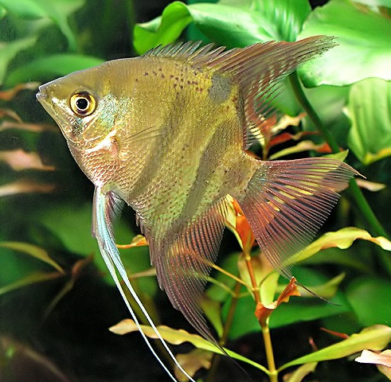

Systématique
- Ordre : Cichliformes
- Famille : Cichlidae
- Genre : Pterophyllum
- Espèce : P. leopoldi
- Auteur : Gosse, 1963

Pterophyllum leopoldi, le scalaire nain ou scalaire de Léopold, est la plus petite espèce du genre Pterophyllum, atteignant seulement 12 à 15 cm de longueur standard. C'est un petit cichlide d'Amérique du Sud très apprécié pour son adaptation aux aquariums communautaires de taille modérée.
L'espèce affiche un corps comprimé latéralement, moins haut proportionnellement que P. altum ou P. scalare, mais toujours distinctif. La coloration de base est brun-gris à jaunâtre avec trois larges barres verticales noires bien visibles. Trait unique et distinctif : présence d'une tache noire sur la nageoire dorsale qui se prolonge sur la quatrième barre verticale du corps (absente chez les autres Pterophyllum). L'espèce se distingue aussi des autres par l'absence de l'encoche pré-dorsale caractéristique du genre. Les nageoires ventrales affichent parfois une teinte rougeâtre discrète. Le dimorphisme sexuel est subtil hors période reproductrice, la femelle arborant une papille génitale conique lors du frai.
Malgré sa petite taille, l'espèce affiche un tempérament remarquablement plus agressif que ses congénères, ce qui contraste nettement avec son apparence délicate.
Pterophyllum leopoldi est une espèce vivant naturellement en petits groupes lâches, occupant les zones mi-profondes des cours d'eau lents. Particularité notable : malgré sa petite taille, c'est l'espèce la plus agressive du genre. Elle défend férocement son territoire, y compris en dehors de la période reproductrice, et peut devenir belliqueuse envers ses congénères ou même vers des poissons nettement plus grands. Cette agressivité territoriale demande une vigilance particulière lors de la sélection des colocataires et de la configuration de l'aquarium.
L'espèce affectionne les environnements densément plantés avec nombreuses racines et refuges, permettant à chaque individu d'établir son propre territoire sans confrontation constante. La surface au sol de l'aquarium est un élément clé pour réduire les agressions interindividuelles. L'espèce demeure peu stressée comparée aux grands scalaires, s'adaptant mieux à la vie en captivité. Elle se nourrit de petits poissons, larves d'insectes et petits crustacés en nature, utilisant son mimétisme parmi les racines pour s'approcher discrètement des proies.
Mode : ovipare pondeur sur substrat découvert; reproduction similaire aux autres Pterophyllum mais moins documentée en captivité.
À maturité, les couples se forment et établissent des territoires à proximité des racines et structures immergées. Les parents nettoient méthodiquement la zone de ponte durant plusieurs jours. La femelle pond entre 50 et 200 œufs (généralement moins que P. scalare ou altum) en ligne, immédiatement fécondés par le mâle. Les deux parents ventilent les œufs en alternance et éliminent les non-fécondés. À 26–28°C, l'éclosion intervient après environ 48 heures. Après 3 à 5 jours, les alevins commencent à nager librement. Les parents transportent progressivement les jeunes dans une zone préalablement préparée, les protégeant énergiquement durant les premières semaines.
La reproduction en captivité est possible mais moins fréquente qu'avec P. scalare. L'acidification et l'abaissement léger de la température (26–28°C) stimulent souvent le frai. Les variations saisonnières imitant les périodes de crue naturelles optimisent les résultats reproducteurs.
Dimorphisme sexuel : très subtil hors période reproductrice. Le mâle peut arborer une bosse frontale légèrement plus prononcée (pas systématiquement). À maturité sexuelle, la femelle affiche une papille génitale conique (oviducte) visible à l'avant de la nageoire anale lors du frai. En dehors, la distinction est extrêmement difficile.
Espérance de vie : 10 à 15 ans en captivité en conditions optimales. L'espèce est robuste une fois bien acclimatée, contrairement à sa réputation de fragilité relative.
Pterophyllum leopoldi fréquente naturellement les marécages, terrains inondés (vázea), rivières lentes et fossés des régions côtières du bassin amazonien brésilien, en eau claire ou légèrement limoneuse enrichie de tannins. L'habitat affiche une eau fortement acide (pH 5 à 6,2) et très douce (GH 1–5 °dGH), enrichie en matière organique créant des eaux noires ou "tamisées". Le courant est lent à très lent. L'espèce occupe principalement les zones à proximité de grosses racines immergées, branches mortes tombées, créant des zones ombragées et abris nombreux. La végétation aquatique et palustre est abondante et dense.
La température naturelle avoisine 25–28°C, avec variations saisonnières marquées selon les périodes de crue. Le substrat est généralement vaseux ou sablonneux avec couche épaisse de matière organique en décomposition. L'oxygénation avoisine les faibles niveaux, compensés par la respiration aérienne additionnelle chez le cichlide. L'espèce vit en agrégations lâches, chaque individu maintenant un petit territoire personnel.
Répartition

Origine naturelle :
- Bassin du Rio Negro (moyen et supérieur), Brésil; bas Orénoque, Venezuela.
- Rivières côtières et affluents du cours inférieur et moyen du Rio Negro.
- Localités principales : zones inondées du Brésil amazonien, régions côtières.
- Distribution fragmentée et endémique de cette région.
La majorité des stocks en captivité proviennent de captures à l'état sauvage; peu d'élevages établis. L'espèce est importée régulièrement en petites quantités pour l'aquariophilie. Populations naturelles menacées par destruction de l'habitat et pollution. Faible disponibilité commerciale comparée à P. scalare.
Paramètres de maintenance
Température : 25 à 28°C, idéalement 26–27°C; l'espèce ne devrait pas dépasser 31°C sur longues périodes.
pH : 5 à 6,2, fortement acide; pH 5,5–6,0 optimal; filtration sur tourbe fortement recommandée.
GH : 1 à 5 °dGH, eau extrêmement douce; filtration efficace essenti elle.
Courant : lent à très lent; flux modéré permettant variation saisonnière.
Volume conseillé : minimum 300–400 L pour un petit groupe (6–10 individus); 120 cm de façade minimum. Très planté, décoration riche en racines, substrat vaseux/sablonneux, lumière tamisée, changements d'eau 20–30% mensuels.
Régime alimentaire
Régime : carnivore; se nourrit de petits poissons, larves d'insectes aquatiques, petits crustacés et micro-invertébrés.
En aquarium, accepte flocons fins, granulés de qualité, nourritures congelées (vers de vase, artémias, daphnies, larves de moustiques) et proies vivantes. L'espèce demande alimentation variée et régulière, 1 à 2 fois par jour en petites portions. Attention : dévore crevettes et petits invertébrés.
Tolérance aux nitrates très faible; teneur doit rester inférieure à 25–30 mg/L. Acclimatation très progressive essent ielle due aux exigences strictes en paramètres d'eau.